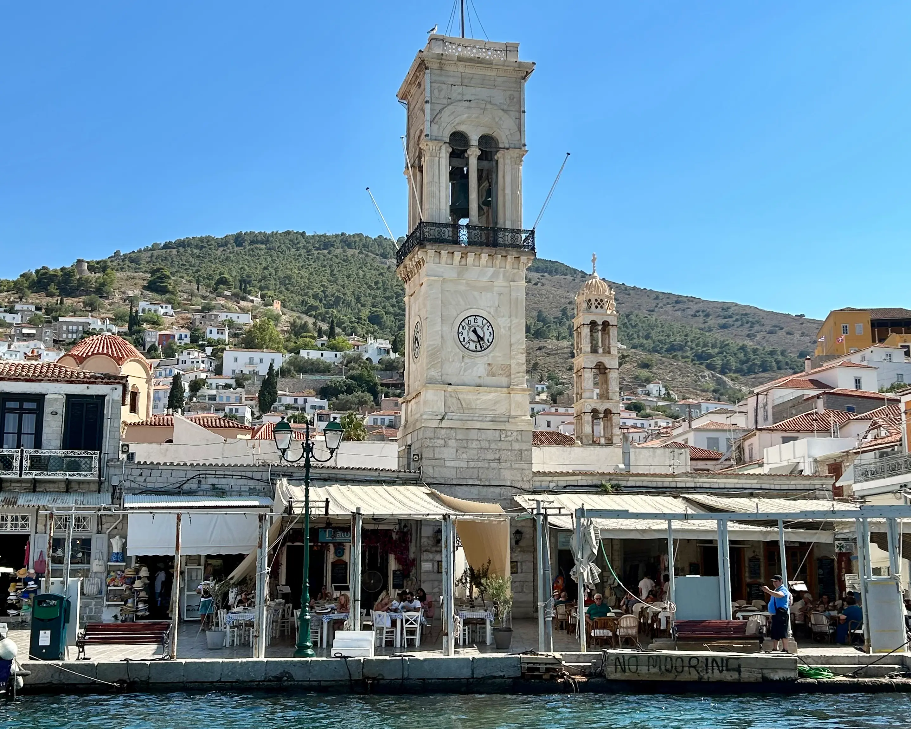
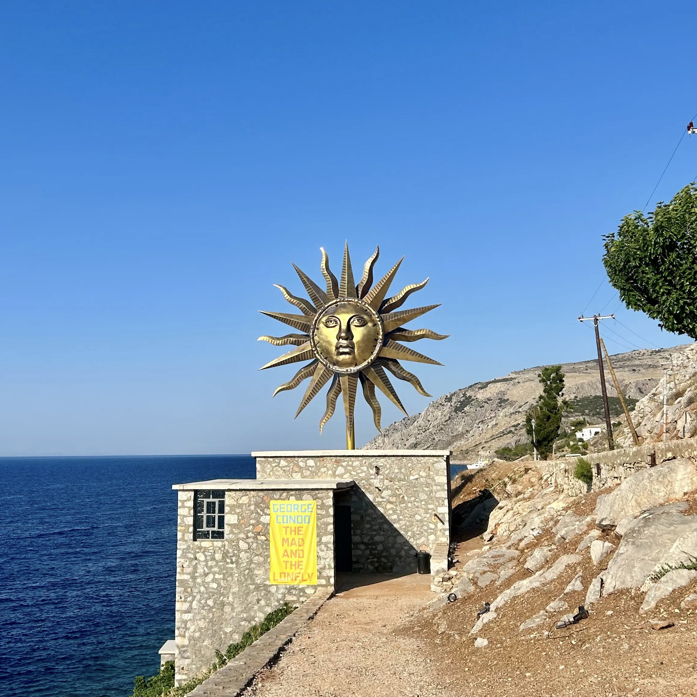
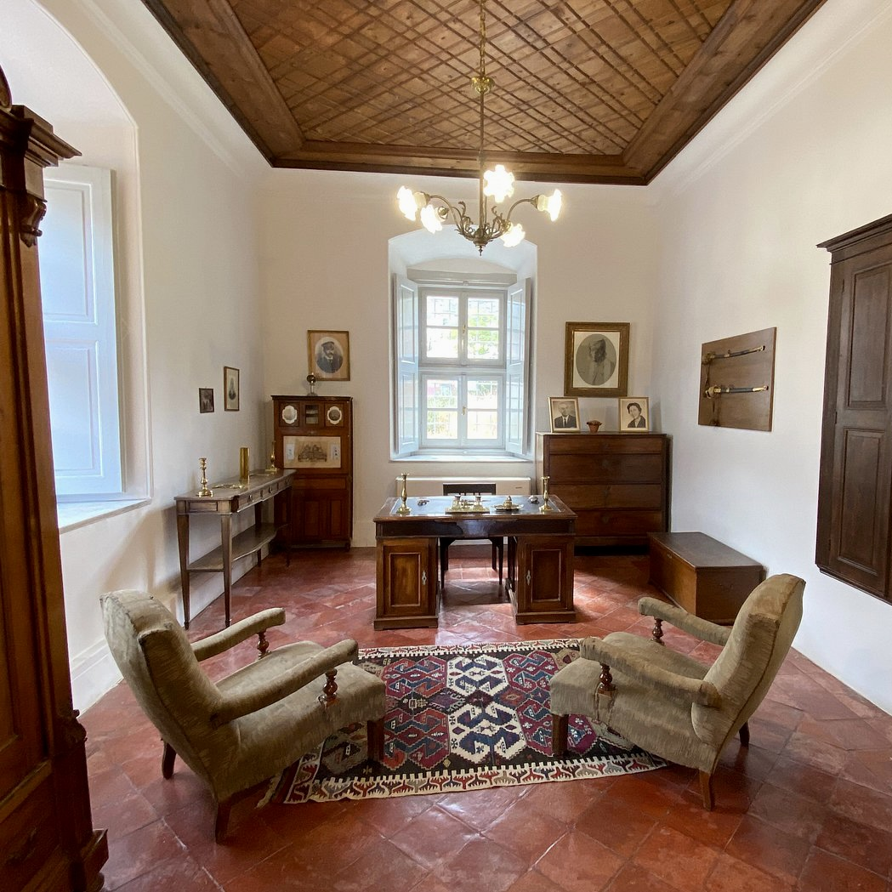
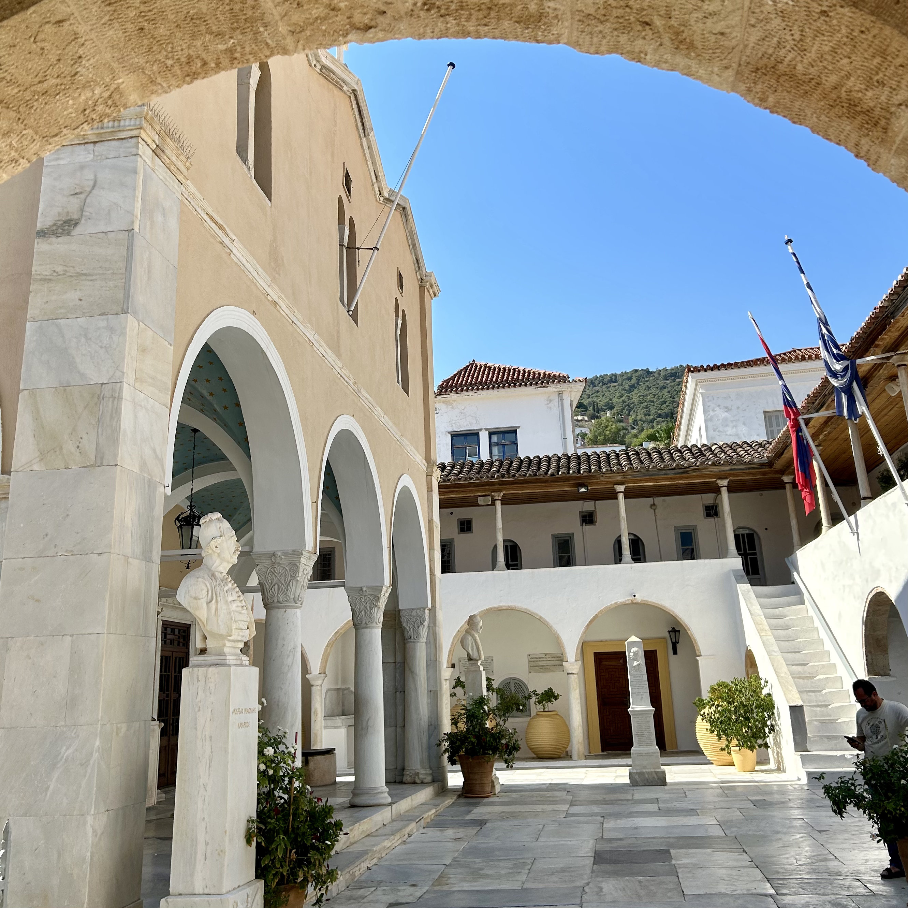
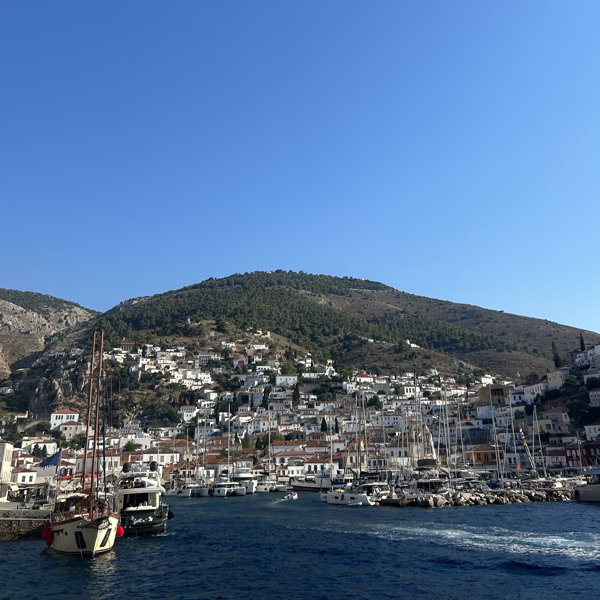

Artists, Poets, and Rebels: Hydra’s Cultural Legacy.

3-4 hours
Private Tour
Custom pick-up point




Your journey begins with a ferry ride across the Saronic Gulf, heading toward Hydra—a jewel of an island where time slows down and beauty takes center stage. As you approach, admire the amphitheatrical harbor lined with stately stone mansions, welcoming you into a place where history and serenity coexist.
With no cars allowed on the island, the rhythm of Hydra is dictated by footsteps and the occasional donkey. Begin your exploration at the Historical Archives Museum of Hydra, where nautical charts, uniforms, weapons, and portraits tell the story of the island’s pivotal role in the Greek War of Independence. Housed in an impressive building overlooking the sea, the museum is a fitting tribute to Hydra’s proud seafaring past.
Next, make your way uphill to visit the Mansion of Lazaros Kountouriotis, now a branch of the National Historical Museum. This elegant 19th-century residence of a prominent naval family showcases period furnishings, folk art, and sweeping views of the harbor—a quiet reminder of Hydra’s aristocratic legacy and enduring charm.
Pause for lunch at a harborside taverna, where you can enjoy fresh seafood and traditional local dishes as caiques and yachts gently drift by. After your meal, follow the scenic coastal path to Kamini, a nearby fishing hamlet ideal for a coffee stop or a refreshing swim at Ydroneta, a secluded spot nestled between rocky cliffs and crystal-clear waters.
Historical Archives Museum of Hydra, Mansion of Lazaros Kountouriotis, National Historical Museum, Kamini & Ydroneta.
Entrance fees to venues
Private licensed guide
If you have any questions or would like to book this tour, feel free to reach out:
Email: elisavetmakri@hotmail.com
Phone: +30 69429190805